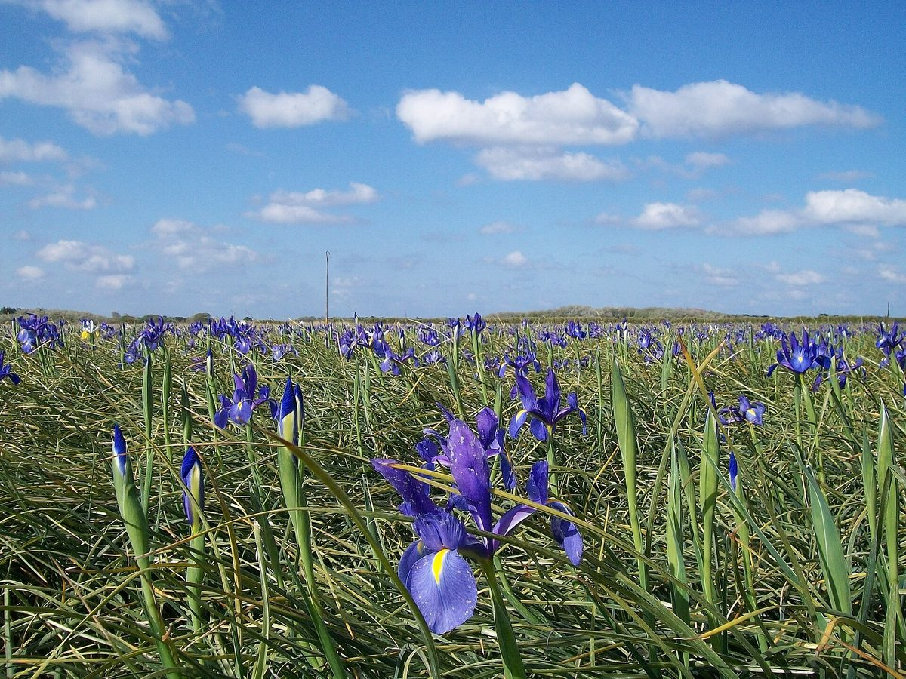

Accompagner les familles du Pays Bigouden, au calme
Entreprise familiale de pompes funèbres et de marbrerie, à Plomeur et à Penmarch. Nous organisons les obsèques selon vos souhaits, religieux ou civils, et prenons en charge les démarches.
Lorsqu'un décès survient
Les premières heures sont souvent difficiles. Voici, de façon générale, les étapes à suivre. Nous pouvons vous accompagner à chacune d'elles.
-
Tout de suite
Faire constater le décès
Un médecin établit le certificat de décès. À domicile, faites appel au médecin traitant ou au médecin de garde. À l'hôpital ou en maison de retraite, l'établissement s'en charge.
-
Dès que possible
Choisir l'entreprise de pompes funèbres
La famille est libre de choisir les pompes funèbres. Vérifiez si le défunt avait souscrit un contrat obsèques ou laissé des volontés écrites. Le défunt peut ensuite être accueilli en maison funéraire.
-
Dans les 24 heures
Déclarer le décès en mairie
La déclaration se fait à la mairie du lieu du décès, avec le certificat médical et une pièce d'identité du défunt. Nous pouvons l'effectuer pour vous.
-
Dans les jours qui suivent
Organiser les obsèques
Inhumation ou crémation, cérémonie religieuse ou civile, avis d'obsèques, fleurs : nous préparons avec vous chaque détail. En règle générale, les obsèques ont lieu entre 24 heures et 6 jours ouvrables après le décès.
-
Dans les semaines suivantes
Prévenir les organismes
Banque, caisses de retraite, assurances, employeur, notaire, services des impôts. Nous vous remettons la liste des démarches et les documents utiles.
Ces informations sont générales. Chaque situation est différente : nous prenons le temps de répondre à vos questions, de jour comme de nuit.
Nos services
Une seule équipe, du premier appel jusqu'à l'entretien de la sépulture.
Organisation des obsèques
Inhumation ou crémation, cérémonie religieuse ou civile, dans le respect de toutes les convictions.
Démarches administratives
Déclaration du décès, mairie, hôpitaux, lieu de culte, organismes : nous nous en occupons avec vous.
Transport de corps
Avant et après mise en bière, sur courtes et longues distances.
Maison funéraire à Plomeur
Des salons privés où la famille et les proches peuvent se recueillir.
Prévoyance obsèques
Préparer à l'avance vos volontés, inhumation ou crémation, pour en décharger vos proches.
Entretien des tombes
Nettoyage, désherbage et fleurissement des sépultures, pour les familles éloignées ou qui le souhaitent.

Iris à Plomeur. Photo El Funcionario, CC BY-SA 4.0.
La maison funéraire
À Pendreff, sur la route de Plobannalec, la maison funéraire accueille les défunts et leurs proches dans un lieu calme, non loin de la mer.
Elle dispose de quatre salons. Les familles peuvent venir se recueillir et rester auprès de leur proche, de jour comme de nuit.
Marbrerie et monuments
Nous réalisons et posons les monuments funéraires, en granit ou en marbre, et assurons les travaux de cimetière.
- Monuments et stèles personnalisables
- Caveaux
- Plaques et gravure
- Rénovation et entretien de sépultures
Rochers à Saint-Guénolé. Photo Jeanne Menjoulet, CC BY 2.0.
Avis d'obsèques
Sur le site définitif, cette rubrique publiera les avis d'obsèques confiés par les familles, avec la date et le lieu de la cérémonie.
Aucun avis n'est affiché sur cette maquette.
Adresses et horaires
Une permanence est assurée 24 heures sur 24, 7 jours sur 7.
Maison funéraire, Plomeur
Route de Plobannalec, Pendreff29120 Plomeur
| Lundi au samedi | 9 h à 19 h |
|---|---|
| Dimanche | 9 h 30 à 19 h |
Horaires indicatifs, à confirmer.
Agence de Penmarch
318 rue des Primevères, Saint-Guénolé29760 Penmarch
Horaires de l'agence à compléter.
Nous contacter
Pour un décès, une question sur la prévoyance ou un projet de monument, vous pouvez venir nous rencontrer à Plomeur ou à Penmarch.
Le formulaire de contact et les coordonnées seront ajoutés sur le site définitif.